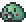
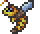
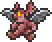

Weapons
Weapons are essential items used for combat against enemies, bosses, and even other players during PvP games. They typically deal more damage than their tool counterparts. Some weapons can be crafted at a Work Bench or a Pre-Hardmode/Hardmode Anvil, while others can only be found in Chests, as enemy drops, or purchased from NPCs. Terraria has a wide variety of weapons and weapons classes, each suited to particular play styles or specific tasks.
There are 8 types of damage:
Summoning
Summon weapons are a type of weapon that spawns secondary characters that will aid during battle by automatically attacking enemies within range. They cannot be damaged or killed, and deal summon damage. Summon weapons come in two different categories:
Additionally, the set bonuses of the Stardust armor and Forbidden armor etc. will summon an entity to fight for the player in a manner similar to minions, although they do not fall into either of the categories above.
These summon minions follow you and assist you in battle. Such weapons that can be obtained pre-hardmode are:
- Vanila:
Item Minion Damage Acquired/made from Notes Slime Staff  8 Drops rarely from slimes (1/10,000 most, 1/8000 sand slimes, 1/100 Pinky). Melee (ground based) attacks, cannot go though blocks. Hornet Staff  9 Made from *9* Bee Wax (Queen Bee drop) Ranged (Flying) attacks, cannot go though blocks, sometimes poisons enemies. Imp Staff  21 Made from *20* Hellstone bar. Ranged (Flying) Attacks, passes through blocks, attacks do not work underwater, sometimes applies 'on fire' debuff. - Calamity:
- Seabound Staff - 11 - Melee (deadly sphere ai) attacks,
- Corroslime Staff - 30 -
- Crimslime Staff - 30 -
- Herring Staff - 20 - Half a minion slot for each minion, melee (airbased) attacks,
Item Minion Damage Acquired/made from Notes Sun Spirit Staff 6 Close up ranged attack, sits above the players head, cannot attack through blocks, only one can be summoned at a time Dank Staff 7 Made from ** Demonite Bar + ** True Shadow Scales (Hive Mind drop) Melee (deadly sphere ai) atacks, passes through blocks, Blood Clot Staff 7 Made from ** Crimtane Bar + ** Flesh Peices (Perferator Hive drop) Seabound Staff 11 Drop from Gardian of the Former Seas Melee (deadly sphere ai) atacks, passes through blocks, - Thorium:
- Hatchling Staff
- Meteor Staff
- Wood Acorn Staff
- Butterfly Staff I
- Butterfly Staff II
- Amber Fossil Staff
- Alchaemist:
- Rose-Slime Staff
These summon minions follow you and assist you in battle. Hardmode summoning weapons include: The Spider staff, Pirate staff, Pigmy staff.